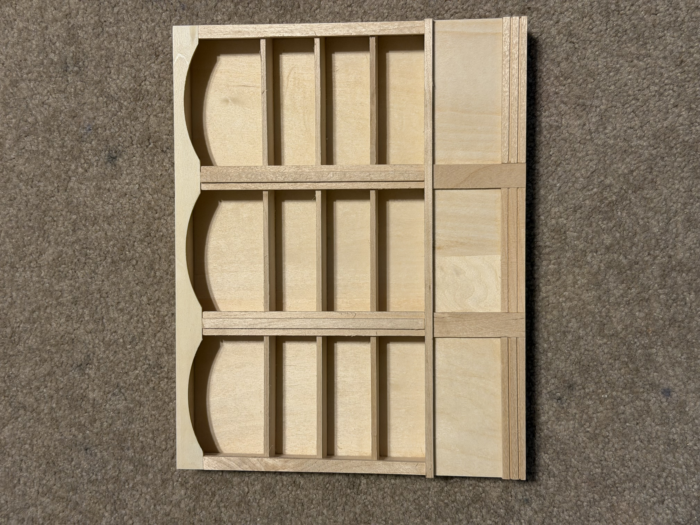
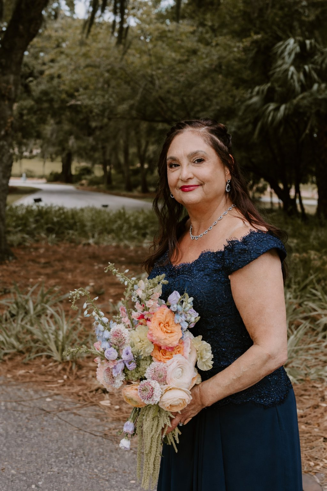
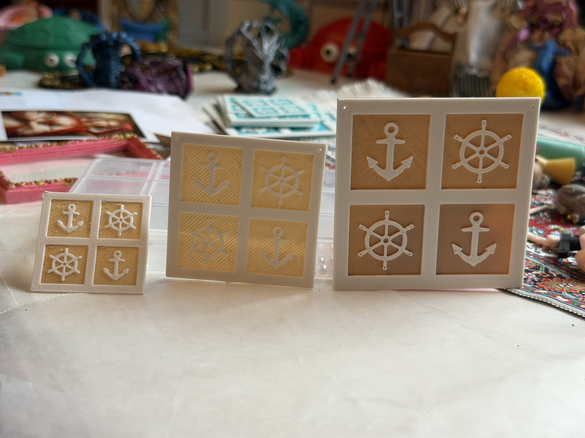
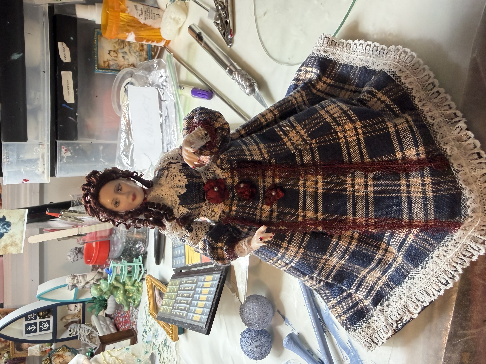

Dollhouse Restoration
Rose takes in vintage and antique dollhouses that need love — repairing structures, replacing wallpaper and flooring, sourcing period-appropriate miniatures, and refinishing everything to make them shine again.
From a Queens childhood to a Connecticut workshop — every tiny world has a story. Here's mine.

My Story
I grew up in Queens, New York, and moved to Connecticut in high school — and it was right around that time that my father gave me a dollhouse that changed everything. What started as a teenage hobby quickly became a true passion. I was hooked on the tiny details, the craft, the idea of building entire worlds at a miniature scale.
Decades later, that passion has grown into a full business run out of my home workshop here in Connecticut. I handcraft, 3D print, and hand-paint miniatures and dollhouses — from original room boxes and furniture to full dollhouse restorations of vintage and antique pieces. Nearly everything that leaves my workshop has been touched by a paintbrush.
I love sharing my love of miniatures with the community — connecting with fellow collectors, helping people find the perfect piece for their collection, and passing on tips and techniques to anyone who wants to learn. If you're new to miniatures or a lifelong collector, there's a place for you here!
When I'm not in the workshop, you'll find me with my two daughters, my Airedale, my Welsh Terrier, or planning my next trip to South Carolina.
My Process
Three core techniques come together in every piece that leaves the workshop.

Rose takes in vintage and antique dollhouses that need love — repairing structures, replacing wallpaper and flooring, sourcing period-appropriate miniatures, and refinishing everything to make them shine again.

Using her home 3D printer, Rose produces incredibly detailed furniture, architectural elements, and accessories. Each printed piece is then finished and painted by hand.

Nearly everything gets finished with a brush. Painting is what brings miniatures to life — adding texture, aging, shadow, and personality. It's Rose's favorite part of the process.
Where It All Started
When Rose was in high school, her father gave her a dollhouse. It was the kind of gift that doesn't just get played with — it sparks something. Rose began furnishing it, then decorating it, then making her own tiny pieces for it. One dollhouse turned into a workshop. A workshop turned into a business. And a business turned into a community.
"Every piece I make carries a little bit of that original feeling — the wonder of building something tiny and perfect. I hope my miniatures bring that same feeling to every collector who finds one." — Rose
Common Questions
Most pieces are 1:12 scale (1 inch = 1 foot), the most common dollhouse scale. Some items are made in 1:6 or 1:24 — the listing will always specify. Have a specific scale in mind? Just ask!
Absolutely! Custom work is a big part of what Rose does. Whether you have a vision for a room box, need a specific piece of furniture, or want a dollhouse restored — reach out through the contact page.
Yes — dollhouse restoration is one of Rose's specialties. If you have a dollhouse that needs repair, refinishing, new wallpaper, flooring, or furnishing, get in touch and describe its current condition.
Every single one. Rose prints the base forms, then sands, primes, hand-paints, and details each piece herself. The hand-painting is what makes them special.
Rose takes packaging very seriously. Every piece is carefully wrapped, cushioned, and boxed — fragile items get double-boxed when needed.
Rose's miniatures are created for adult collectors and display. Many pieces are delicate and contain very small parts. They are best enjoyed as decorative collectibles, not toys.
Ready to Collect?
Browse current listings or reach out — Rose would love to help you find or create the perfect piece.